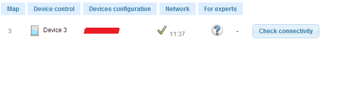

|
This page last changed on Dec 13, 2013 by greyhat.
Hi Everyone.
I have problem with razberry with shutter device.
When i was add new shutter fibaro to the system ewerything is ok.
Shutter is visible in the menu etc. and i could use it.
The device is visible on /device/switching but when restart razberry or,
nothing to do with shutter few hours, device dissaper from menu !!!
I can't change to on/off becouse i have't got menu my device ;/
Any idea why ??
BR Greyhat
view: Device control/status

view: Device control/switches

|
The question mark tells you that something has gone wrong wwhile including the device. So:
- Switch to Expert mode view
- Got to devices configuration and select this device.
- At the bottom of that screen press Advanced actions
- Next select Force re-interview
In the same page you can select after a while Show Interview Results
If that doesn't work Exclude and re-Include the device.
If that doesn't work ask further help on Z-Wave.me forum
PZ
edit: just noticed you posted there already. You may have to wait a while for an answer. The forum is slow.

Posted by pz1 at Dec 13, 2013 11:11
|
|
Hi thx for your reply.
ok, test your proposition = result everything is OK.
But in menu, shutter still not visable.
When, i exclude device and then include, then few hours is't visable in menu, but past the night no !
I think so the problem in openremote.
BR
GRey
Posted by greyhat at Dec 13, 2013 11:24
|
|
From the information you give I can not conclude that openremote is the problem. What you describe here is all on the Zwave.me side, and nothing relating to Openremote.
Posted by pz1 at Dec 13, 2013 12:48
|
|
{kind=link}
{kind=link}